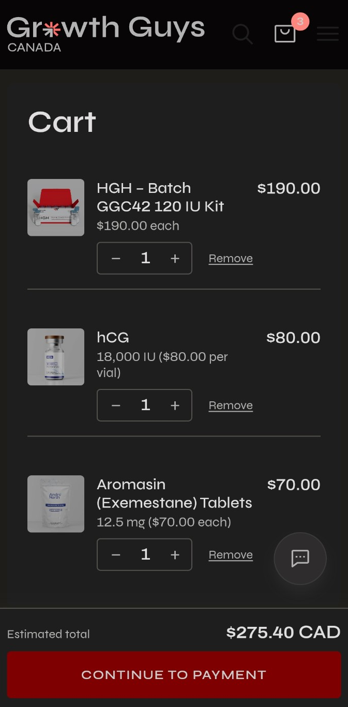
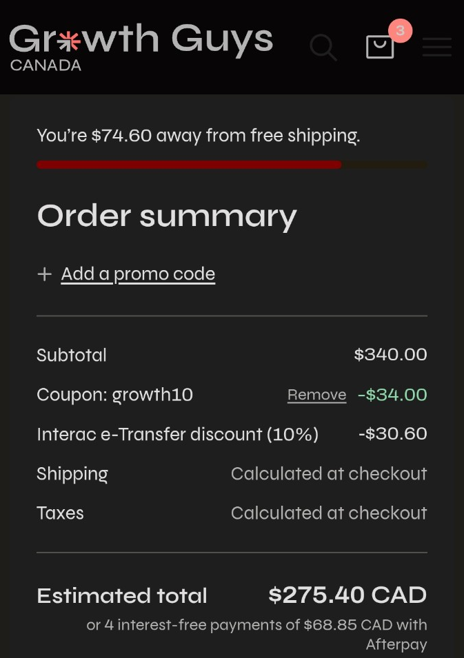
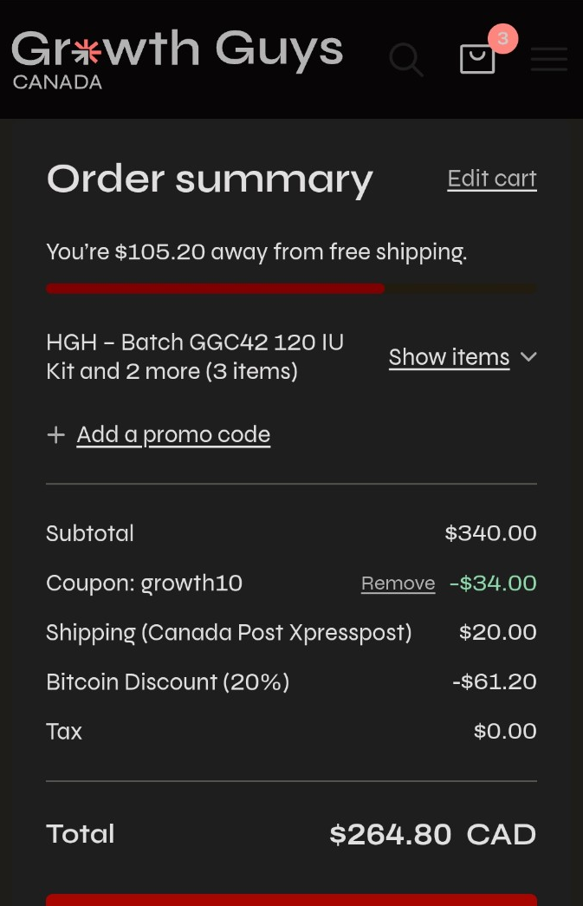

Growth Guys GROWTH10 Promo Code & Savings Guide (2026)
A practical promo-code, coupon-code, and discount guide with a dated current record, cart arithmetic, and retained checkout examples.
Searching for a Growth Guys promo code, discount code, or coupon code? Start with the current GROWTH10 record below, then use the worked examples to understand how code savings and payment-method reductions appear in a cart. This page gives readers the answer first and keeps current evidence separate from older checkout examples.
Current GROWTH10 record: BPC-157 10mg - Single vial
GROWTH10 is documented as Verified at checkout. The current pre-payment cart record shows a CAD 40.00 merchandise subtotal, a CAD 4.00 code reduction, and a CAD 43.20 displayed total.
| Current record field | Observed value |
|---|---|
| Product | BPC-157 10mg - Single vial |
| Cart subtotal | CAD 40.00 |
| GROWTH10 discount | CAD 4.00 |
| Displayed total | CAD 43.20 |
| Record reference | growth10-owner-20261118050100-44241642421 |
Open the dated GROWTH10 record · View the retained cart evidence · Read the current record page

What does the Growth Guys promo code GROWTH10 do?
GROWTH10 is the code identity used in the current dated record. The current record documents the cart state before payment: the product, merchandise subtotal, code reduction, displayed total, timestamp, and retained evidence link. That makes the claim easier to inspect than a bare “working code” badge or an undated coupon listing.
Promo code
Enter GROWTH10 in the merchant’s promotional-code field and look for a separate code-reduction line in the cart or checkout summary.
Discount code
The same code may be described as a discount code when the reader is searching for the reduction shown against the merchandise subtotal.
Coupon code
Coupon code is another common search phrase for the same type of field. The evidence page identifies the exact code used for the dated observation.
Current record
The current record links the words to a specific product, cart arithmetic, observation date, and retained evidence.
How to read the current cart arithmetic
The current record separates three values that are often blurred together on coupon pages. The subtotal is the merchandise amount visible before the code. The discount is the amount attributed to GROWTH10. The displayed total is the cart total shown in the retained observation. Shipping and tax fields are kept separate when they were not part of the cart observation.
| Reader check | Current GROWTH10 record |
|---|---|
| Basket product | BPC-157 5mg — Single vial |
| Merchandise subtotal | CAD 40.00 |
| Code reduction | CAD 4.00 |
| Displayed cart total | CAD 28.80 |
Use the current record page for the canonical record and the verification history for older dated observations. A historical result should not be presented as the current cart.
Retained checkout examples: Interac and Bitcoin
The three retained screenshots below are useful because they show how a code line and a payment-method line can appear together in a checkout summary. They are historical worked examples from this guide; the current dated record above is the first place to check for the latest GROWTH10 cart observation.
Original merchandise cart and 10% code savings
In the original example, the merchandise subtotal was CAD 340.00. GROWTH10 reduced that subtotal by CAD 34.00, leaving CAD 306.00 before any other discount, shipping, or tax line.

Interac e-Transfer plus GROWTH10
The Interac example shows a second 10% reduction after the code reduction. Sequential 10% reductions produce 19% effective merchandise savings because the second reduction is calculated from the already-reduced subtotal.

Bitcoin plus GROWTH10
The Bitcoin example shows a 20% payment-method reduction after the 10% code reduction. The sequential calculation produces 28% effective merchandise savings rather than a simple 30% addition.

| Example | Displayed merchandise result |
|---|---|
| GROWTH10 alone | 10% code reduction |
| GROWTH10 + Interac example | 19% effective sequential savings |
| GROWTH10 + Bitcoin example | 28% effective sequential savings |
How to check a Growth Guys discount code
- Open the merchant catalog and choose the product you intend to review.
- Open the cart or checkout view without placing an order.
- Enter GROWTH10 in the promotional-code field.
- Confirm that the cart shows a separate code reduction and compare the subtotal with the displayed total.
- If a payment method changes the visible cart state, re-enter GROWTH10 and check the final visible code reduction again.
- Compare the live result with the dated current GROWTH10 record and then consult the history archive for context.
Promo code, coupon code, and discount code: the reader’s shortcut
These search phrases point to the same decision: where is the code, what reduction did it produce, and which dated record supports the statement? “Promo code” is the strongest short phrase for this page, while “discount code” and “coupon code” describe the same reader task. The evidence trail matters more than the label: a product, subtotal, reduction, displayed total, date, record reference, and screenshot link let the reader inspect the claim directly.